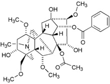

L'Aconitum napellus non è certo una pianticella comune, ma ha una interessante particolarità: è la più velenosa della nostra flora.
Percorrendo un sentiero situato vagamente non lontano dalle "mie" montagne, ho incrociato una quantità di napelli davvero impressionante: un incontro così denso e pregno di aconitina, sparso addirittura in alcune centinaia di metri, non mi era mai capitato nelle mie peregrinazioni montane.

Va bene qualche pianticella, ma mai viste così tante, fra erbacce e lamponi selvatici!
L'aconitina è quella bella molecola qui sotto ed è uno dei veleni vegetali più potenti, con una LD50 di un paio di mg (un centinaio di volte maggiore (!) di quella del famoso "cianuro", che tutti hanno almeno sentito giornalisticamente nominare. Per cosa sia la LD50, consultare S. Google).

Avrei voluto soffermarmi e fare qualche foto decente e ravvicinata ai begli elmetti azzurri, ma non ne ho avuto la possibilità... sarà per la prossima volta.
Intanto ieri mi sono accorto che adiacente all'orto è nata anche quest'anno la figlioletta di un vecchio stramonio (Datura stramonium) che mi rallegrava l'occhio negli anni passati con i suoi eleganti calici bianco-violacei e con quelle singolari "palle" aculeate, piene di "scopolaminici" semini.
Belle molecole anch'esse, delle quali ho già parlato.
Evviva il solstizio!
Oggi è iniziata l'estate astronomica, godiamoci questa meravigliosa stagione.